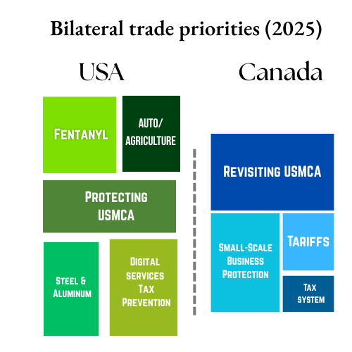

US-Canada trade summary (2024)
In 2024, US goods imports from Canada totaled approximately $412.7 billion, accounting for about 17 % of total US goods imports. Over 76.45% of Canadian exports are destined for the US, largely driven by integrated supply chains, especially in energy, manufacturing and automotive sectors totaled approximately $435.17 billion. Roughly 65 % of Canada’s goods imports come from the US, reflecting tight economic integration (mostly USMCA-compliant). US exports to Canada of around $348 billion constitute roughly 17 % of total US goods exports; US energy and auto sectors are major contributors.
US- Canada Trade: Key sectors
Canada → US Goods: Automobiles & parts (~27 % of exports), oil & gas, lumber, aluminium, steel; strategic minerals, pulp/paper, food products.
Canada → US Services: Financial, travel/tourism, tech services tied to energy and business.
US → Canada Goods: Agriculture (dairy, wheat, pork), machinery, pharmaceuticals, autos/parts, oil-related services.
US → Canada Services: Predominantly professional/technical, telecom, and transport services; less data-specific but significant in bilateral totals.
Negotiation timeline
Note: USMCA exemptions have kept 85%+ of U.S.–Canada trade tariff-free, but high-profile sectors (steel, autos, aluminIum, and specific consumer goods) have faced persistent tariffs and negotiation pressure.
January 2025
Jan 7: Trump criticises US-Canada trade deficit calling it a ‘subsidy’ and claims how US will annex Canada using economic force.
Jan 15: Canadian leadership including Prime minister Justin Trudeau meet to discuss the US threat of Tariffs and revising of Canadian Free Trade Agreement.February 2025
Feb 1:
US launches fentanyl-specific tariff (10%) via executive order.
Additional 25% tariffs on Canadian imports (10% on energy); Trudeau addresses Canadians to “Buy Canadian,” pauses tariffs 30 days as border enforcement escalates.
Canada retaliates by imposes 25% tariffs on US imports including beverages, household goods and lumber.Feb 3: Both sides pause tariffs.
March 2025
March 4: U.S. tariffs on Canadian goods (25%, 10% for energy) and first phase of Canadian retaliatory tariffs (25%) take effect.
March 13: Canada imposes additional 25% retaliatory tariffs on U.S. steel, aluminium, and select goods.
Active Tariffs:
US 25% on Canadian goods (10% energy)
Canada 25% on some U.S. goodsApril 2025
April 2: U.S. announces “reciprocal” global tariffs (10% baseline); does not apply to Canada/Mexico.
April 3: 25% U.S. tariffs take effect on auto imports, but CUSMA-compliant/Canada-exempt.
April 5: U.S. implements 10% “reciprocal” tariffs globally—Canada generally exempt, but ongoing sectoral tariffs.
April 9: Pause announced on some specific country tariffs (not Canada).
Active Tariffs:
US 25% general/CAN; 10% energy
Canada 25% on select goodsJune 2025
June 4: US elevates metal tariffs to 50%, applies new anti-dumping duties on Canadian lumber.
June 27:
Canada imposes quotas and 50% surtax on certain steel mill product imports.
Trump announces suspension of trade talks with Canada due to Canada’s implementation of its Digital Services Tax.
June 29/30: Canada rescinds its Digital Services Tax; US resumes negotiation.Active Tariffs:
US 25% general, 50% steel/aluminium; 10% energy;
Canada 25% select U.S. goods, 50% steelJuly 2025
July 16: Canadian PM Carney signals optimism low for tariff-free deal; prepares C$1.2 b in aid.
July 11: U.S. announces plans to raise Canadian tariffs from 25% to 35%, effective August 1, citing lack of progress on fentanyl and Canadian retaliation.
Canada warns trade team may withdraw from US talks.Active Tariffs:
US 25% general/CAN (35% scheduled Aug 1), 10% energy, 50% steel/aluminIum
Canada: 25% select U.S. goods, 50% steelAugust 2025
September 2025
October 2025
November 2025
December 2025
January 2026
Jan 4: Routine US–Canada trade consultations reopened unresolved issues including softwood lumber, steel/aluminium carve-outs, and tariff-remission frameworks, with Washington signalling stricter enforcement in 2026.
Jan 11: Canadian officials raised concerns privately that the administration’s expanding national-security tariff logic could spill into traditionally exempt North American supply chains.
Jan 16: Ottawa announced a controlled framework permitting limited Chinese EV entry for affordability and testing purposes; U.S. officials publicly criticised the move as undermining allied coordination on EV tariffs and supply-chain security.
Jan 17, 2026: US Tariff threats to European countries supporting Denmark has been a concern to Canada both as a NATO ally and as a border state of both the US and Greenland.
Jan 18: Washington signalled it would reassess Canada’s EV-related tariff exemptions if Chinese penetration increased, raising fears of secondary trade pressure despite USMCA protections.
Jan 20: Canadian analysts concluded Ottawa was being informally warned against “dual-track” China engagement as a precondition for preserving tariff stability with the U.S.

Understanding USA’s Priorities
Priorities
- Illicit drugs (fentanyl) & national‑security tariffs → Triggered sweeping 25% tariffs on Canadian goods on Feb 1; later escalated to 35%–50% for non-USMCA goods
- Steel & aluminium tariffs → US doubled duties from 25% to 50% in June on Canadian metals; major sustained pressure point
- Auto/Agriculture reciprocal tariffs → 25% tariff targeted imports and US exports (autos, dairy), partial USMCA adherence allowed exemptions; threat of almost full escalation remained
- Reciprocal tariffs leverage → Threats to increase tariffs if Canada doesn’t engage on broader economy, potentially using up to 35% across sectors, including pharmaceuticals and semiconductors
- Preservation of USMCA framework → US partially exempted USMCA-compliant goods (~85% of exports) from tariffs, signalling continued reliance on the existing treaty even amid pressure
Understanding Canada’s Priorities
Priorities
- Tariff retaliation → Canada responded with 25% tariffs on C$30 b of US goods effective Feb 4; planned expansion to C$155 b after 21 days, targeting autos, dairy, lumber, appliances, and agriculture (Reddit).
- Diversifying trade & reducing US dependence → PM Carney publicly emphasized expediting diversification with other markets and reducing reliance on US after escalating tensions (washingtonpost.com).
- Protecting small businesses impacted by tariffs → Major exporters such as small manufacturing firms suffered despite USMCA exemptions; large energy firms largely unaffected (Reuters).
- Reviewing USMCA earlier than planned → Trade Minister LeBlanc said ready to open three-party talks before the 2026 scheduled review, to address trade friction and contain China-related dumping
- Domestic assistance to affected sectors → Government announced up to C$1.2 b in support to lumber industry; managing fallout from US duties on softwood lumber
References
- https://abcnews.go.com/Business/timeline-us-canada-trade-dispute/story?id=123335160
- https://www.blakes.com/insights/us-canada-tariffs-timeline-of-key-dates-and-documents/
- https://en.wikipedia.org/wiki/Timeline_of_the_2025_United_States_trade_war_with_Canada
- https://www.bakertilly.ca/fr/perspectives/2025-u-s-canada-trade-war-timeline-2
- https://apnews.com/article/trump-canada-trade-tariffs-43a08970daa1ae5dd888bd3198bac45f
- https://www.cnbc.com/2025/06/30/canada-rescinds-digital-services-tax-after-trump-cuts-off-us-trade-talks.html
- https://www.dea.gov/sites/default/files/2020-03/DEA_GOV_DIR-008-20%20Fentanyl%20Flow%20in%20the%20United%20States_0.pdf
- https://www.dea.gov/sites/default/files/2020-03/DEA_GOV_DIR-008-20%20Fentanyl%20Flow%20in%20the%20United%20States_0.pdf